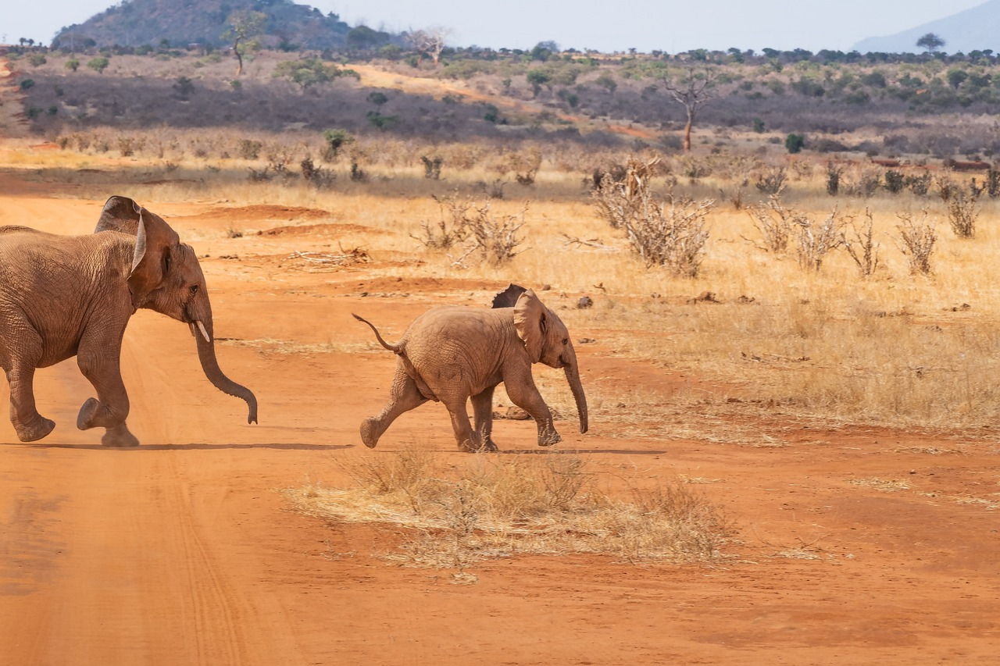
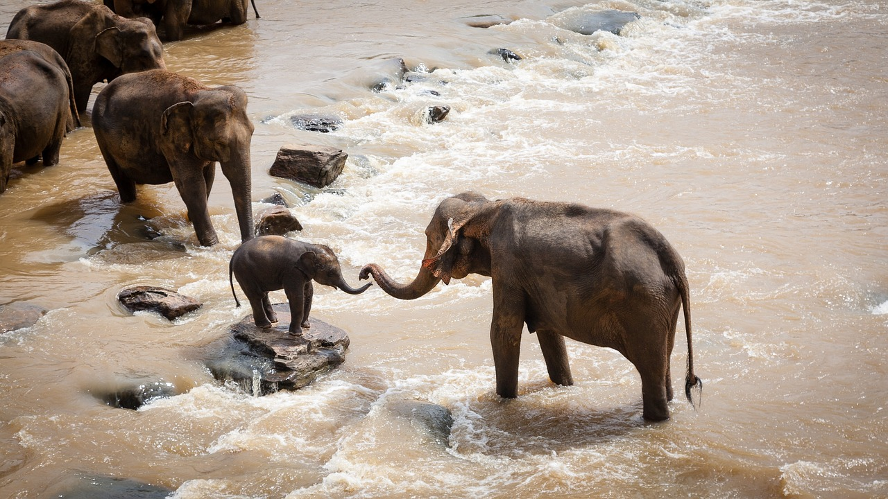
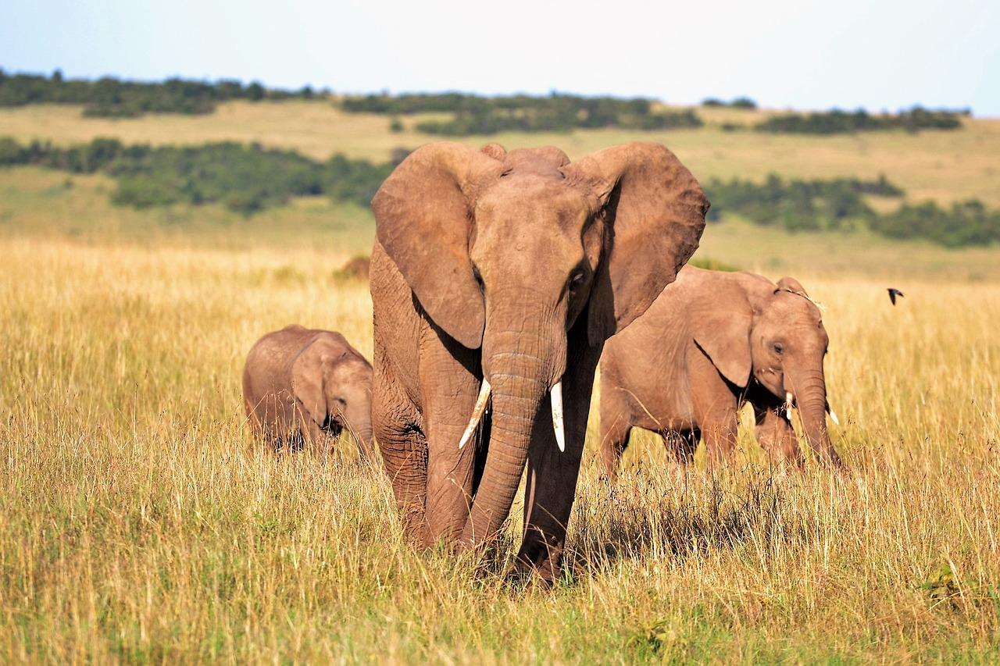
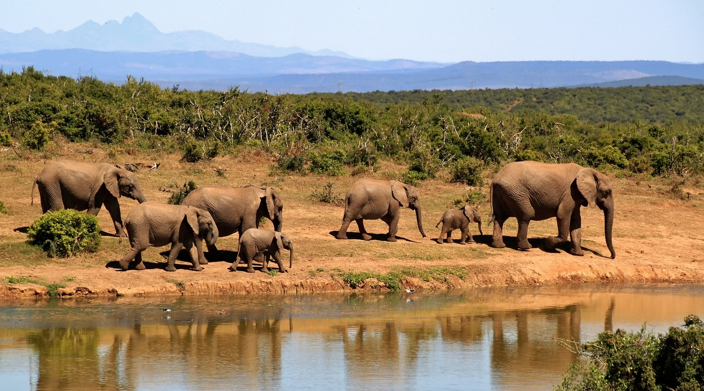
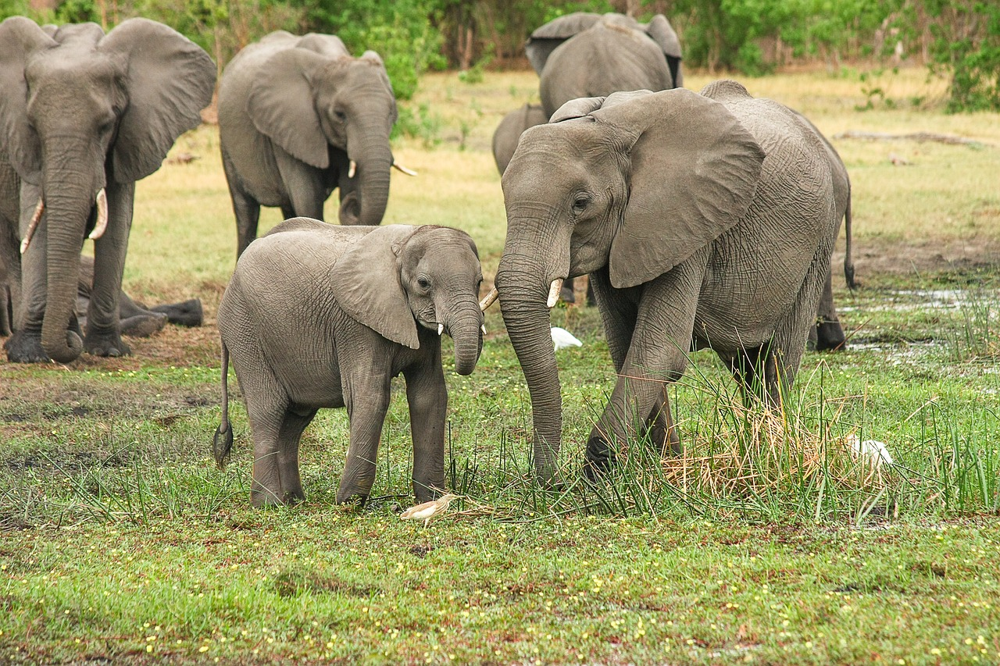
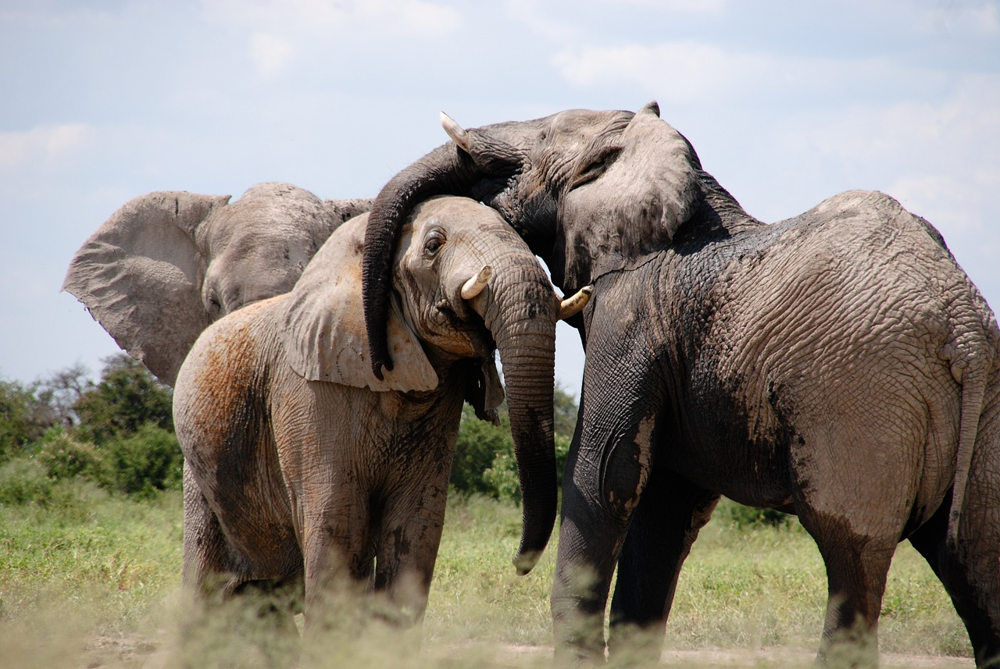
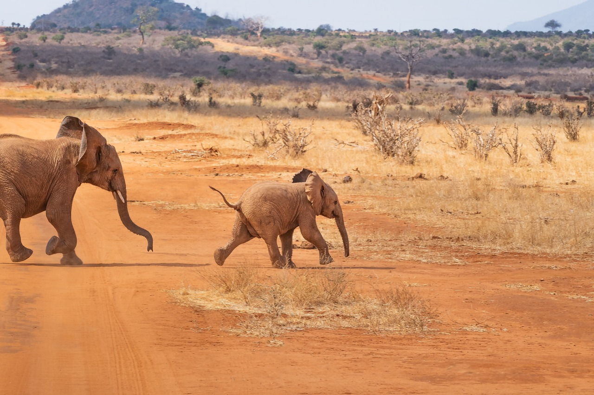
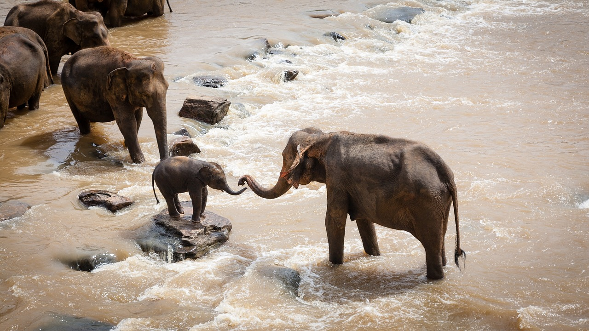
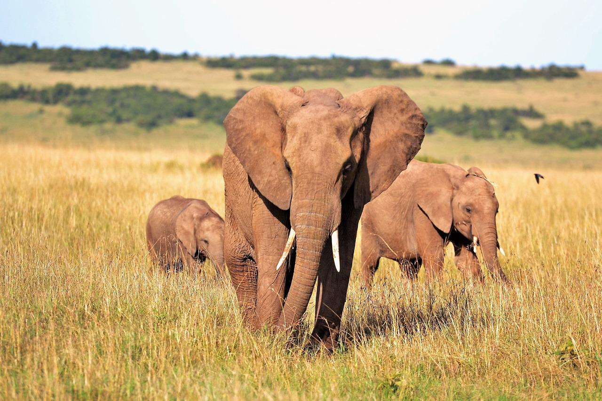
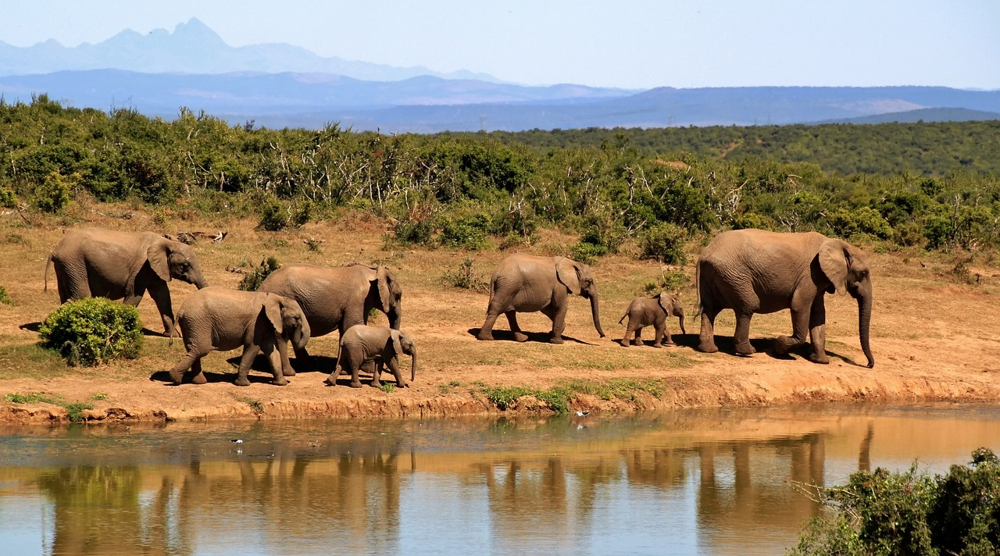
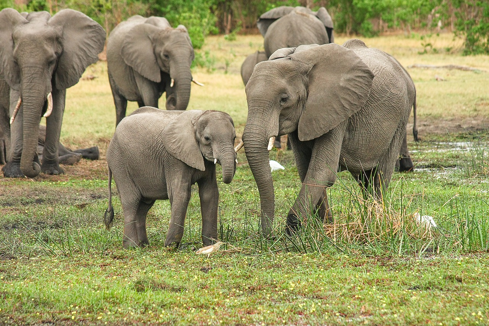
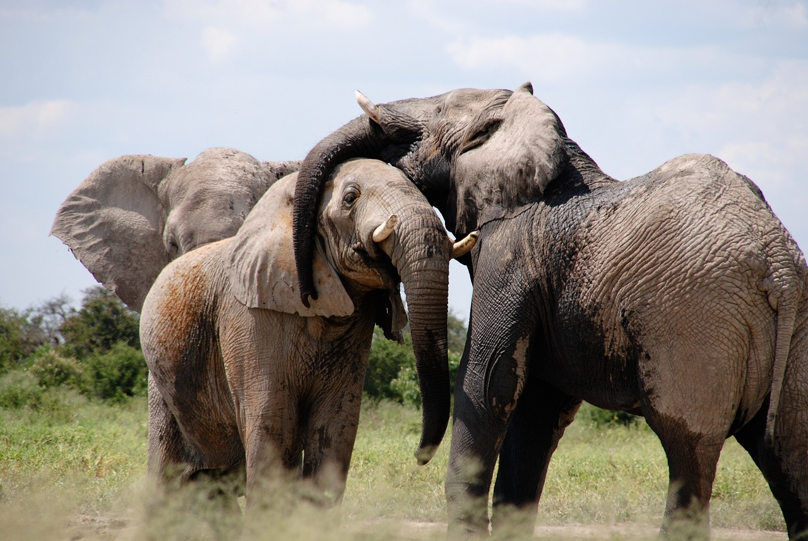
ELEPHANT
The elephant, revered for its intelligence and sheer size, stands as one of the most majestic creatures to roam the Earth. With their powerful trunks, capable of grasping objects with incredible precision or drawing water for drinking and bathing, elephants display remarkable adaptability and resourcefulness. These gentle giants form tight-knit family bonds, led by the oldest and wisest female known as the matriarch, who guides the herd in search of food and water across vast landscapes. Despite their formidable appearance, elephants possess a tender and nurturing nature, often displaying acts of empathy and compassion towards their fellow herd members. Yet, they face significant threats from habitat loss and poaching.